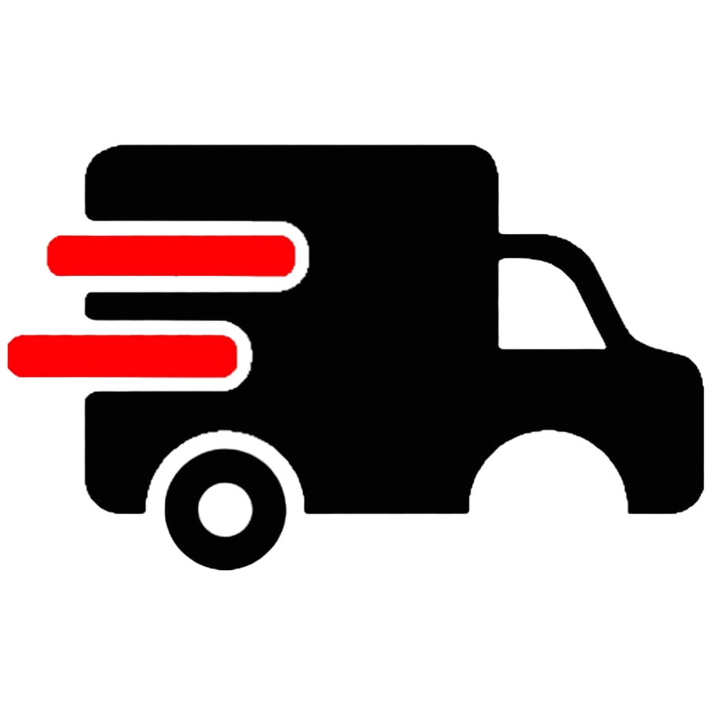

Bienvenido!
"Tu mejor opción para envíos rápidos y seguros".
Número de documento:
Login
Registro
Tipo de Documento:
Seleccione el tipo de documento
DNI
RUC
Carnet de Extranjeria
Otros...
Número de documento:
Correo Electrónico:
Nombre:
Apellido Paterno:
Apellido Materno:
Celular:
Departamento:
Seleccione un departamento
Amazonas
Áncash
Apurímac
Arequipa
Ayacucho
Cajamarca
Callao
Cusco
Huancavelica
Huánuco
Ica
Junín
La Libertad
Lambayeque
Lima
Loreto
Madre de Dios
Moquegua
Pasco
Piura
Puno
San Martín
Tacna
Tumbes
Ucayali
Provincia:
Seleccione una provincia
Distrito:
Seleccione un distrito
Dirección:
Registrar